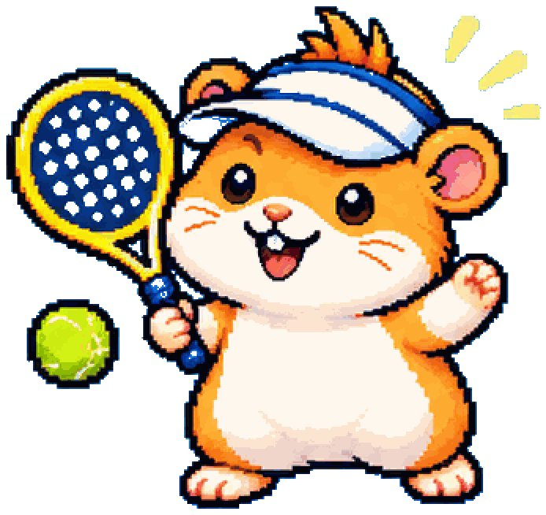

CourtCrews
Doe mee met Neckslag

- Elke maand een nieuwe periode, met nieuwe tegenstanders.
- 3 à 4 wedstrijden per maand, op je eigen niveau. Win je, dan stijg je een klasse.
- Jij kiest: meedoen of een maand overslaan. Dat zet je zelf in de app.
-
1Download CourtCrews
Gratis. Heb je de app al? Ga dan door naar stap 2.
Kom na het installeren terug naar deze pagina, of scan de poster nog een keer.
-
2Meld je aan bij Neckslag
De app opent bij Neckslag. Nieuw? Dan maak je eerst een account aan, en je zit er meteen in.
Open Neckslag in de appOpent er niets? Open deze pagina dan in je gewone browser (vaak via het ⋮-menu: "Openen in browser").
Dit werkt alleen op je telefoon. Scan de QR-code op de poster met je telefoon.
-
3Kom in de WhatsApp-groep
Daar regelen we de baanhuur via Tikkie. Doe dit pas als je in de app bij Neckslag zit.
Naar de WhatsApp-groep
Liever met je eigen vriendengroep? In CourtCrews start je gratis je
eigen competitie, met klassen, promotie en degradatie.
Download de app en kies "Maak nieuwe competitie".